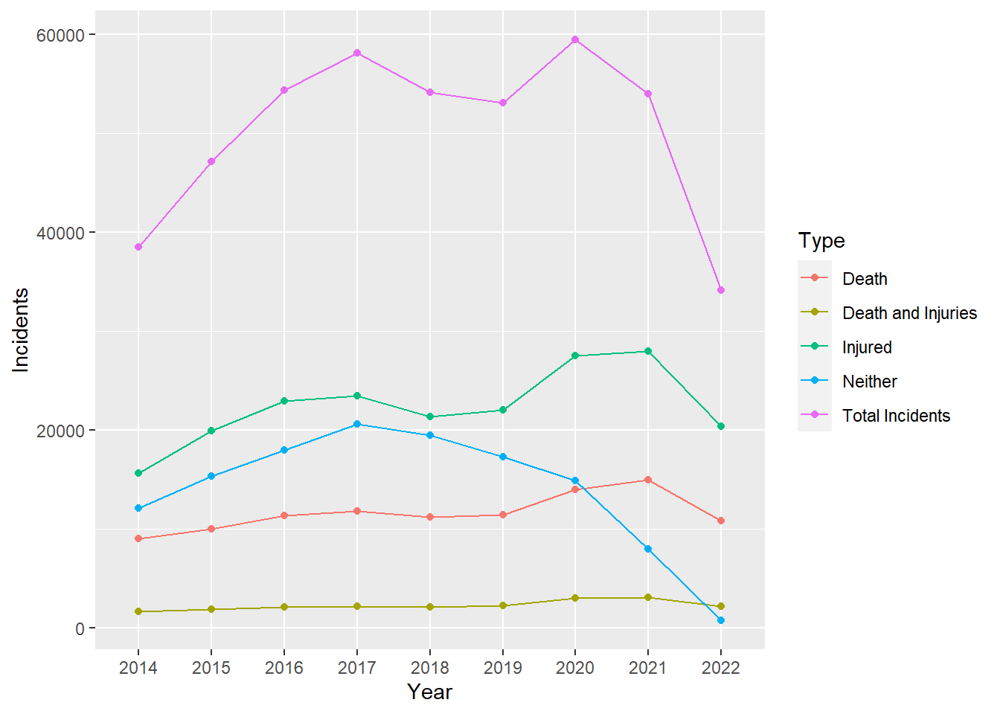

Code
#|echo: false
library(tidyverse)This midterm assignment I will be doing an exploratory analysis on gun violence in the US.
Pundits are tasked with providing unbiased reporting on new information, as it develops to inform their audiences, in order for society to adapt or adjust to the developing situation. To aid in this effort, many institutions or groups exist to aggregate data on various topics of interest such as gun violence and is often widely available for academics or internet sleuths to analyze, visualize, and interpret. The culmination of these efforts is often a report to answer pertinent questions to topics societies are concerned with.
Here in the U.S. any citizen has the right to own firearms. However, the proliferation of firearms has many concerned on public safety and crimes committed with firearms. From your average Joe to politicians at the federal level, opinions differ on the threats posed and consequences of wide-spread availability of firearms, ability to conceal or openly carry a firearm. The the advent of social media has increased the flow of information and based on increased reporting of gun related crimes, the topic of firearms back into the forefront of average citizens and policy-makers. However, some people consider the increased reporting on crimes a product of increased flow of information and could mislead society and policy makers into believing crime, in particular gun crime is out of control.
Therefore in an effort to inform those concerned on the topic of firearms, I will present and interpret the data set described below in an intuitive and discernible manner. The main overarching question that will be addressed is:
Has there been an increase or decrease in gun violence?
Definition: Here I consider a change in the number of casualties, as a measure of increasing/decreasing gun violence.
Figures made and presented in this post will be based mainly on a U.S. Gun Violence Data set containing gun violence incidents, retrieved from Kaggle.com on 3/21/2023. However, the data set was originally collected from gunviolencearchive.org.
To help the reader understand the keys and attributes available in the data set, an example of the data is displayed and each column header is defined to ensure understanding what values and observations mean.
#|echo: false
library(tidyverse)gundata <- read.csv("Gun violence data 1.csv", stringsAsFactors = FALSE)
glimpse(gundata)Rows: 452,787
Columns: 7
$ Incident_ID <int> 92114, 92117, 92119, 92125, 92129, 92133, 92135, 92137,~
$ Incident_Date <chr> "1/1/2014", "1/1/2014", "1/1/2014", "1/1/2014", "1/1/20~
$ State_Code <chr> "KY", "KY", "KY", "OK", "OK", "NY", "NY", "NY", "NY", "~
$ City_Or_County <chr> "Lexington", "Cynthiana", "Louisville", "Lawton", "Okmu~
$ Address <chr> "Sixth St and Elm Tree Ln", "US 62", "S 38th St and W B~
$ Killed <int> 0, 0, 0, 0, 0, 0, 1, 0, 0, 0, 0, 0, 0, 1, 0, 1, 1, 0, 0~
$ Injured <int> 1, 1, 1, 0, 2, 1, 0, 1, 1, 1, 1, 3, 1, 0, 1, 0, 0, 1, 1~gundata_attributes <- read.csv("Gun_violence_data_descriptions.csv")
knitr::kable(gundata_attributes)| Column.names | Data.Type | Description |
|---|---|---|
| Incident ID | Item | Unique identifier for each incident |
| Incident Date | Attribute | The month, day, and year the incident occurred |
| State_Code | Position | 2 letter code representing states where incident occurred |
| City_or_County | Position | The city or county where an incident occurred |
| Address | Position | Physical location within a city or county where an incident occurred |
| Killed | Attribute | Number of people killed in the incident |
| Injured | Attribute | Number of people injured in the incident |
We are working with 1 key that identifies each separate gun incident, the dates when incidents occurred, and several position-type data where the incident takes place.
Given we are interested in whether there has been an increase in gun violence/crimes within the recent years, it seems only natural to derive total the number of incidents for each year, across the US.
gundata <- gundata %>%
separate(Incident_Date, sep="/", into = c("month", "day", "year"))
total_by_year <- summarise(group_by(gundata, Year = year), Incidents = n())
ggplot(total_by_year, aes(x= Year, y= Incidents, group = 1)) +
geom_line() + geom_point()Interestingly, from the year 2014 there was an increase of gun incidents up until 2020, then there was a sharp decline in gun violence to levels less than 2014. Although all violence is tragic, fortunately not every incident results in casualties, but injuries or sometimes neither! Compared to 2014 the amount of gun violence appears to be dropping, but for the incidents that do occur: are more people dying, or getting injured? Lets have a look at whether there was an increase in either deaths, injuries or neither.
Totals <- total_by_year
Both_by_year <- summarise(group_by(gundata[gundata$Killed >= 1 & gundata$Injured >= 1,], Year = year), Incidents = n())
Casualties_by_year <- summarise(group_by(gundata[gundata$Killed >= 1 & gundata$Injured == 0,], Year = year), Incidents = n())
Injuries_by_year <- summarise(group_by(gundata[gundata$Killed == 0 & gundata$Injured >= 1,], Year = year), Incidents = n())
neither_by_year <- summarise(group_by(gundata[gundata$Killed == 0 & gundata$Injured == 0,], Year = year), Incidents = n())
Totals <- bind_rows(Totals, Casualties_by_year, Injuries_by_year, neither_by_year, Both_by_year)
Totals$Type <- c(rep_len("Total Incidents", 9), rep("Death", 9), rep("Injured", 9), rep("Neither", 9), rep("Death and Injuries", 9))
ggplot(Totals, aes(x= Year, y= Incidents, group = Type, color = Type)) +
geom_line() + geom_point()
This is interesting, but perhaps worrying as the data first suggested the U.S. was experiencing less gun violence nationwide. Despite, the total number of violent gun incidents drastically decreased between the years 2020 and 2022, to underneath 2014 levels. However, the amount of deaths and/or injuries per year increased, or at the very least stayed constant! The apparent decrease in gun incidents is a result of non-casualty incidents decreasing.
Even though there is an apparent decrease in gun violence incidents, it appears the likelihood of a death and/or injury occurring per incident is increasing each year. Could we possibly reflect that by introducing a new channel like size of each point based on the average number of deaths and/or injuries per incident for each year?
M_KIT_per_year <- gundata %>%
group_by(year) %>%
summarise(mean = mean(c(Killed, Injured)))
M_K_per_year <- gundata %>%
group_by(year) %>%
summarise(mean = mean(Killed))
M_I_per_year <- gundata %>%
group_by(year) %>%
summarise(mean = mean(Injured))
Neither <- rep(0, 9)
M_KI_per_year <- gundata %>%
group_by(year) %>%
summarise(mean = mean(c(Killed, Injured)))
Mean <- c(M_KIT_per_year$mean, M_K_per_year$mean, M_I_per_year$mean, Neither, M_KI_per_year$mean)
Totals$Mean <- Mean
ggplot(Totals, aes(x= Year, y= Incidents, group = Type, color = Type)) +
geom_line() + geom_point(aes(size = Mean)) +
scale_size(range = c(1, 10), breaks = c(0, .50, .75, .9))Although we were able to visually observe some interesting details about the data using line scatter plot idiom, I believe we have reached a limit. We could continue to add additional channels to convey more information, but the last addition of point size to convey the average number of deaths/injuries per incident does not work very well. This due to the average number of deaths or injuries per year being fairly constant and outliers have negligible impact on the point size when there are 40000+ incidents with only death or injury each year.
Let us try to stacked bar plot idiom, I think it will be an improvement over the scatter plot describe each category as parts of a whole.
ggplot(Totals[10:45,], aes(x = Year, y= Incidents, fill=as.factor(Type)))+
geom_col(position = "stack")+
labs(fill = "Casualty Type") +
geom_text(aes(label = Incidents), position = position_stack(vjust = .5))
# ggplot(Totals[10:45,], aes(x = Year, y= Incidents, fill=as.factor(Type)))+
# geom_col(position = "fill") +
# labs(fill = "Casualty Type")Between the years 2014 and 2022, we can more clearly observe a decrease in total incidents, however the amount of incidents resulting in death, injury, or both increased when comparing 2014 and 2022 specifically. Despite the apparent down trend in total incidents, it appears the each incident that does occur is more likely to result in at least one casualty.
Although no new information was added based on the scatter plot, the stacked bar plot idiom seems to be better, even if only slightly. Using length on the Y axis to represent the total incidents per year is better than having it be its own category on the scatter plot, in theory this should reduce the cognitive demands on the reader. Also, the connecting lines are not necessary to expressing the order of time.
If you recall, we have position data in the form of States, down to the county level. The U.S. is a very large and diverse country, are the trends observed so far applicable to the entire country? or does each state have its own ‘pattern’ of gun violence?
[Long story short I tried really hard to utilize the county data, but after a few hours I had to throw in the towel! I even had help from ChatGPT, Stack overflow, Github documentation on relevant packages, and I even ended up signing up with Google Maps API and no avail. I will just make things simpler for myself and stick to State level.]
Let us keep things simple and start by summarizing the entire gun violence data set from the years 2014 to 2022 by summing up all the gun deaths and injuries together as ‘casualties’ and utilize the State-level position data.
library(urbnmapr)
Casualties_by_state_all_data <- gundata %>%
group_by(State_Code) %>%
summarise(sum = sum(c(Killed, Injured)))
colnames(Casualties_by_state_all_data)[colnames(Casualties_by_state_all_data) == "State_Code"] <- "state_abbv"
spatial_data <- left_join(get_urbn_map(map = "states", sf = TRUE),
Casualties_by_state_all_data,
by = "state_abbv")old-style crs object detected; please recreate object with a recent sf::st_crs()ggplot() +
geom_sf(spatial_data,
mapping = aes(fill = sum),
color = "#ffffff", size = 0.25) +
labs(fill = "All Casualties 2014 to 2022")Well that is interesting, it appears that the vast majority of casualties are clearly occurring in California, Texas, and Illinois, with runner-ups being Pennsylvania, New York, and Florida.
Albeit interesting, it is important to remember a few things.
[After spending so much time trying to work with county level data, I could not be bothered to find a whole new data set and add more complexity to this assignment!]
Again, to keep things simple, since we care if there was an overall increase/decreases in gun violence, lets derive a new attribute: “Ratio”. Where Ratio is the ratio of casualties between the years 2022 and 2014 (2022/2014).
# Filter for 2014 and 2022 and group by state
ratio <- gundata %>%
filter(year %in% c(2014, 2022)) %>%
group_by(State_Code) %>%
# Sum killed and injured for each year and calculate ratio
summarize(casualties_2014 = sum(c(Killed[year == 2014], Injured[year == 2014])),
casualties_2022 = sum(c(Killed[year == 2022], Injured[year == 2022])),
ratio = casualties_2022 / casualties_2014)
colnames(ratio)[colnames(ratio) == "State_Code"] <- "state_abbv"
spatial_data <- left_join(get_urbn_map(map = "states", sf = TRUE),
ratio,
by = "state_abbv")old-style crs object detected; please recreate object with a recent sf::st_crs()ggplot() +
geom_sf(spatial_data,
mapping = aes(fill = ratio),
color = "#ffffff", size = 0.5) +
labs(fill = "Ratio (2022/2014)") +
ggtitle("Ratio of 2022:2014 Casualties") +
geom_sf_text(data = get_urbn_labels(map = "states", sf = TRUE),
aes(label = state_abbv),
size = 3)+
theme(panel.grid = element_blank()) +
labs(x = NULL, y = NULL) +
coord_sf(datum = NA) + scale_fill_gradientn(colors = c("green", "red"))old-style crs object detected; please recreate object with a recent sf::st_crs()
Although we do not have information to deal with population density issue, by taking the ratio of casualties in 2022 to 2014, we can clearly see that the states in red/orange (Minnesota, Colorado, New Mexico) had ratios of at least a 2, suggesting a 2 fold increase in gun related casualties. The greener states (For example, Florida, Nebraska, California) had ratios of less than 1, suggesting a decrease in gun casualties.
When only taking into account the number of isolated incidents, there has been a sharp decrease in gun violence across the entire U.S.
However, when incidents are separated by whether death, injury, both, or neither occurred, the scatter plot and stacked bar plot idioms revealed the decrease in total incidents is mostly due to non-casualty incidents plummeting, while death, injury, or both increased (or at least stayed constant).
When breaking down the data by state, we observed initially the most populous states like California, Texas, and Illinois constituted a bulk of the casualties that have occurred between the years 2014 and 2022.
Given the limitations and biases against populous states, to help provide a more meaningful comparison between states taking the ratio of 2022 to 2014 casualties for each state reveals that each state is experiencing its own unique trend in gun violence. Therefore, suggesting other variables not accounted for in the data set are at play on a by-state basis, suggesting a more nuanced conversation is needed.
Between the years 2014 and 2022, has there been a meaningful change in gun violence in the United States?
On a nation-wide basis there are more casualties (deaths and/or Injuries), despite less individual gun incidents occurring in 2022 compared to 2014.
On a by state basis, the data suggests a few states, for some unknown reason given the available data, are experiencing a surge in gun violence, while other states had less violence and most hover in-between.
It is important to note the population densities of each state were not accounted for and a 2-fold change in populous state is a lot more casualties than the same fold change in a low population state.
Therefore, without more data to be more confident on a state by state basis to have a more nuanced conversation, there has been an increase in gun violence in the United States in the form of casualties.